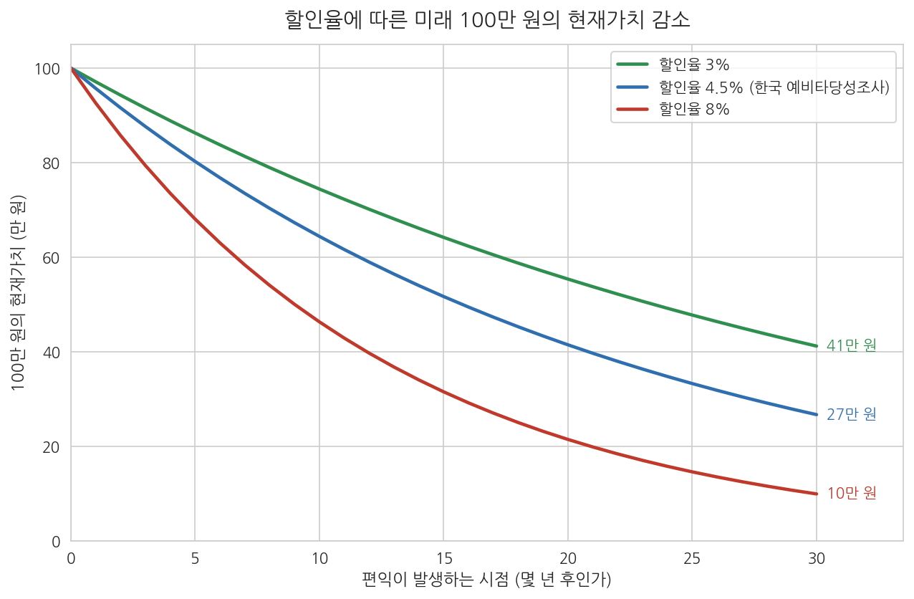
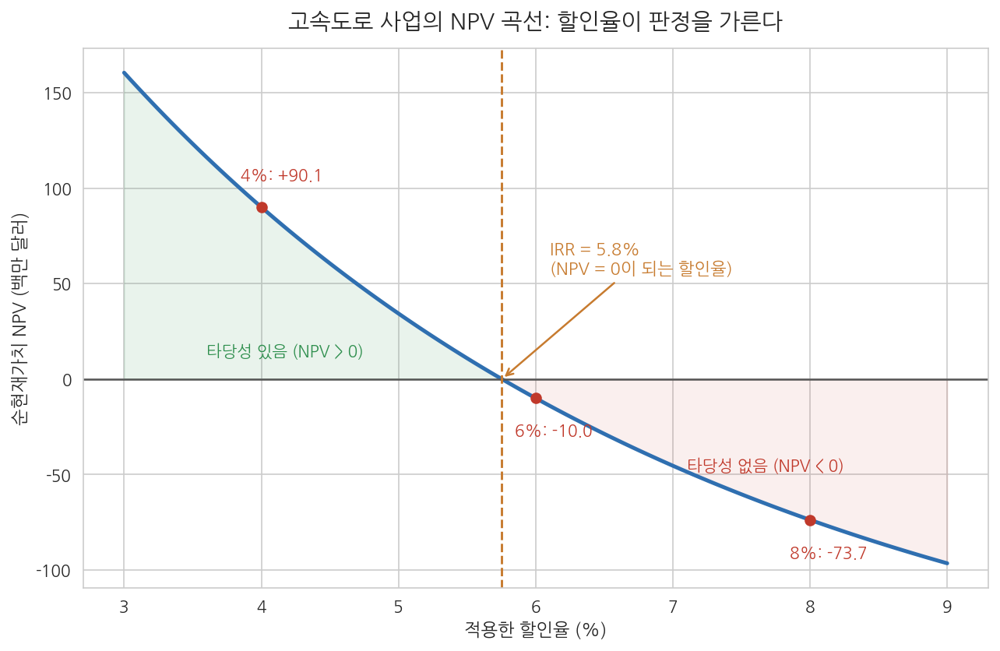

13주차 2차시. 비용편익분석
최종 수정: 2026-08-13 · 이 교재는 학기 중에도 계속 업데이트됩니다
비용편익분석은 먼 미래의 파급효과까지 내다보는 긴 안목과, 여러 사람·산업·지역에 미치는 갖가지 부수효과까지 살피는 넓은 안목이 중요할 때, 사업의 바람직함을 평가하는 실용적인 방법이다. (프레스트와 터비, 「비용편익분석: 개관」, 1965)
이 장에서 배우는 것
2017년 8월, 당시 기획재정부는 예비타당성조사(예타)에 적용하는 사회적 할인율을 5.5%에서 4.5%로 내렸다. 10년 만의 인하였다. 언뜻 1%포인트의 미세 조정처럼 보이지만, 이 결정은 수조 원짜리 사업의 운명을 갈랐다. 할인율은 미래의 편익을 현재의 가치로 바꿀 때 적용하는 환율 같은 것이어서, 할인율이 낮아지면 20년, 30년 뒤에 발생할 편익의 현재가치가 커진다. 철도나 댐처럼 편익이 먼 미래에 걸쳐 발생하는 장기 사업일수록 타당성 판정이 통과 쪽으로 기울게 되는 것이다. 정부가 저성장·저금리 시대에 맞춰 숫자 하나를 바꾸자, 전국의 사업 타당성 계산이 일제히 다시 돌아갔다.
이 장은 그 계산의 원리를 배우는 시간이다. 12주차에서 우리는 예산결정을 합리화하려는 총체주의의 이상을 보았고, 13주차 1차시에서는 그 이상을 제도화하려던 PPBS와 ZBB가 대안을 비교하는 분석 도구를 필요로 했다는 점을 확인했다. 그 도구가 비용편익분석이다. 정부 전체의 예산을 한꺼번에 합리적으로 배분하려는 시도는 좌절되었지만, 개별 사업 하나하나의 타당성을 계산하는 기법은 살아남아 정교해졌고, 한국에서는 예비타당성조사라는 제도로 자리 잡았다. 계산은 어렵지 않다. 이 장의 모든 계산은 산수 수준이며, 중요한 것은 숫자 뒤에 있는 세 개의 질문이다. 무엇을 편익과 비용으로 셀 것인가, 시장가격이 없거나 왜곡되어 있으면 어떻게 잴 것인가, 시점이 다른 돈을 어떻게 비교할 것인가. 구체적으로 다음을 배운다.
- 사업분석과 비용편익분석의 의의, 그리고 비용·편익을 세는 네 가지 구분
- 잠재가격의 개념: 소비자잉여, 시장가격의 조정, 무형가치의 측정
- 현재가치와 할인율: 미래의 돈을 오늘의 돈으로 바꾸는 계산
- 대안비교의 세 방법: 순현재가치(NPV), 편익비용비율(B/C), 내부수익률(IRR)
- 가상의 고속도로 건설 사례로 타당성 분석의 전 과정을 직접 계산하기
이 장은 하나의 질문을 따라 전개된다. "이 사업은 국민 경제 전체의 관점에서 추진할 가치가 있는가를 어떻게 계산하는가?"
2.1 사업분석과 비용편익분석이 무엇인지, 무엇을 비용과 편익으로 세는지 정리한다 → 2.2 시장가격이 없거나 왜곡되었을 때 쓰는 잠재가격을 배운다 → 2.3 할인율로 미래의 비용·편익을 현재가치로 바꾸는 계산을 익힌다 → 2.4 NPV · B/C · IRR 세 가지 판정 기준을 비교한다 → 2.5 고속도로 건설 사례로 전 과정을 계산하고, 예비타당성조사와의 연결을 예고한다.
2.1 사업분석과 비용편익분석의 의의
예산결정은 사업에 대한 결정과 금액에 대한 결정으로 이루어진다. 예산을 편성하려면 먼저 어떤 사업을 추진할지를 결정해야 하는데, 이것이 선택의 문제다. 분석(analysis)은 예산의 경제논리를 구현하는 가장 핵심적인 방법으로, 비용과 편익을 기준으로 대안을 체계적으로 검토해 의사결정자에게 각 선택이 갖는 의미를 분명히 밝혀 주는 활동을 뜻한다. 사업은 정책의 하위 개념이므로(목표-수단의 계층제), 사업분석(program analysis)은 정책분석(policy analysis)의 하위 개념으로 볼 수 있다. 사업분석의 핵심은 특정 사업의 경제적 타당성 또는 사업 간 우선순위를 결정하는 것, 곧 무엇을 위해 얼마만큼의 비용을 투입할 가치가 있는가를 따지는 것이다. 이때 사업분석은 투입과 성과 사이의 인과관계를 가정하며, 린치(Lynch, 1985)는 이 인과관계 가정이 타당한지를 살펴보는 것이 예산분석의 핵심이라고 보고 이를 사업영향이론이라고 불렀다. 투입과 성과의 인과관계를 전제로 대안을 비교하는 방법에는 체제분석, 운영연구 등 여러 갈래가 있지만, 가장 널리 활용되는 방법이 비용편익분석이다.
비용편익분석(cost-benefit analysis)은 특정 선택 문제를 체계적으로 검토하기 위한 개념 틀이자 경제적 분석 방법으로, 의사결정자가 결정의 결과를 더 잘 이해할 수 있도록 일련의 대안들의 비용과 편익을 각각 화폐 단위로 추정해 비교하는 것을 뜻한다(McKenna, 1980). 사업 수명의 전 기간을 포함하는 장기적 안목과, 간접적이고 무형적인 효과까지 포함하는 넓은 안목으로 평가한다는 점이 특징이며(Prest & Turvey, 1965), 예산과정에서는 사업의 타당성과 우선순위를 식별하는 분석도구로 쓰인다.
비용편익분석의 특징은 셋으로 정리된다. 첫째, 개별 투자사업(project)을 평가하는 경제적 분석의 한 분야다. 넓은 의미로는 프로그램이나 정책의 평가까지 포함하지만, 주된 적용 대상은 도로, 철도, 댐 같은 개별 사업 단위다. 둘째, 사회적 관점에서 비용과 편익을 파악한다. 기업의 재무분석이 그 기업에 들어오고 나가는 돈만 따진다면, 비용편익분석은 국민 경제 전체의 관점에서 그 사업이 국민 생산에 얼마나 공헌하는지를 편익으로, 국가 자원이 다른 용도에 쓰였더라면 얻었을 가치(기회비용)를 비용으로 잰다. 셋째, 공공사업의 추진·운영 과정에서 발생하는 모든 비용과 편익을 장기적 시각에서 종합적으로 평가한다. 사회적 관점의 시간 지평은 민간보다 훨씬 길기 때문에, 뒤에서 볼 할인율의 선택과 위험에 대한 대응도 장기적 관점에서 이루어져야 한다.
그렇다면 무엇을 비용과 편익으로 세는가. 네 가지 구분이 판단의 기준이 된다(표 13-2).
표 13-2. 비용과 편익의 네 가지 구분
| 구분 | 내용 | 예 (도로·댐 건설) | 분석 포함 여부 |
|---|---|---|---|
| 실질적 vs 금전적 | 실질적 편익은 사회후생의 증가, 실질적 비용은 자원의 기회비용. 금전적 비용·편익은 화폐적 가격 변화로 생긴 것 | 도로 건설로 주변 토지가 개발되어 생산성 증가(실질적) vs 투기로 땅값만 상승(금전적) | 실질적인 것만 포함 |
| 내부적 vs 외부적 | 사업 자체에서 발생하는 것 vs 외부효과를 통해 간접적으로 발생하는 것 | 수력발전소의 발전량 증가(내부적) vs 댐의 홍수 방지·식수 공급(외부적) | 둘 다 포함 |
| 직접적 vs 간접적 | 사업의 일차적 목적과 관련된 것 vs 부산물의 성격을 갖는 것 | 통행시간 단축(직접적) vs 지역 관광 활성화(간접적) | 둘 다 포함 |
| 유형적 vs 무형적 | 시장에서 평가 가능한 것 vs 시장에서 평가할 수 없는 것 | 차량 운행비 절감(유형적) vs 경관 훼손, 생명·안전(무형적) | 무형적인 것도 측정해 포함하는 것이 바람직 |
표 13-2에서 핵심은 첫 번째 구분이다. 비용편익분석에는 실질적 비용과 편익만 넣고, 금전적 비용과 편익은 넣지 않는다. 도로가 뚫려 주변 토지의 생산성이 실제로 높아졌다면 그것은 사회 전체의 후생 증가, 곧 실질적 편익이다. 그러나 투기 심리가 자극되어 땅값만 올랐다면 이는 금전적 편익에 불과하다. 그 지역 지주의 이득은 다른 지역의 수입 감소로 상쇄되어 사회 전체로는 이득이 아니기 때문이다. 나머지 세 구분의 함의는 방향이 같다. 외부적, 간접적, 무형적이라는 이유로 빼놓지 말라는 것이다. 다만 외부적 편익을 포함할 때는 투입과 효과 사이에 인과관계가 있는지, 그 효과를 이 사업의 효과로 귀속시킬 수 있는지가 핵심 기준이 된다.
사업 유치를 원하는 쪽은 흔히 "이 사업이 되면 지역 부동산 가치가 오른다"를 편익으로 내세운다. 그러나 비용편익분석의 관점에서 땅값 상승 자체는 금전적 변화일 뿐 사회 전체의 실질적 편익이 아니다. 땅값에 반영된 실질적 원천(접근성 개선, 생산성 증가)을 직접 세면 되고, 그 위에 땅값 상승을 또 얹으면 같은 편익을 두 번 세는 이중계산이 된다. 반대로 비용 쪽에서는 공사비처럼 잘 보이는 항목만 세고 소음, 환경 훼손 같은 무형적 비용을 빠뜨리기 쉽다. 편익은 부풀리고 비용은 빠뜨리는 이 두 오류가 타당성 분석이 낙관으로 기우는 전형적 경로다.
2.2 비용과 편익의 추정: 잠재가격
비용의 측정은 상대적으로 수월하다. 실무에서는 비용 항목의 리스트를 작성해 항목별로 측정하는 방식을 쓴다. 연구개발비, 토지구입비 같은 최초비용과 인건비, 자재비, 임대료 같은 정기적 투입비용을 각각 추정하는 것이다. 물론 이 작업에도 사업 관련 전문가와 기술자의 참여가 필요하지만, 시장에서 거래되는 투입요소는 가격표가 있다. 문제는 편익이다. 편익은 간접적이고 무형적인 경우가 더 많아 비용보다 측정하기 훨씬 어렵다. 이론적으로 편익은 사회후생의 증가분인데, 사회후생이라는 개념 자체가 직접 측정되지 않기 때문에 우회로가 필요하다. 그 우회로의 출발점이 소비자잉여이고, 종착점이 잠재가격이다.
소비자잉여: 편익 측정의 출발점
소비자잉여(consumer surplus)는 소비자가 어떤 재화에 대해 지불할 용의가 있는 최대 금액과 실제로 지불한 금액의 차이다. 무더운 날 생수 한 병에 2,000원까지 낼 용의가 있는 사람이 1,000원에 샀다면, 이 사람은 1,000원어치의 잉여를 얻은 것이다. 공공사업의 편익도 같은 논리로 잴 수 있다. 새 도로가 통행시간을 줄여 준다면, 이용자들이 그 시간 단축에 지불할 용의가 있는 금액의 합이 편익의 측정치가 된다. 그런데 이 방법이 작동하려면 지불할 용의를 드러내는 시장이 있어야 한다. 정부가 공급하는 재화와 서비스는 시장이 없는 경우가 훨씬 많고, 시장이 있더라도 가격이 왜곡되어 있는 경우가 있다. 여기서 잠재가격이 등장한다.
잠재가격(shadow price)은 시장가격이 없거나 시장가격이 자원의 진정한 사회적 가치를 반영하지 못할 때, 이를 대신하기 위해 추정하는 조정된 가격을 뜻한다. 완전경쟁시장이라면 시장가격이 곧 자원의 기회비용이므로 그대로 쓰면 되지만, 독과점시장의 가격은 기회비용에 독과점 이윤이 더해진 가격이어서 사회적 가치를 과대평가하며, 깨끗한 공기나 생명·안전처럼 아예 시장이 없는 가치는 가격 자체가 존재하지 않는다. 잠재가격은 시장에서 관찰되지 않으므로, 이를 추정하기 위한 다양한 방법(헤도닉 가격법, 조건부가치측정법, 선택실험 등)이 개발되어 활용되고 있다.
시장가격의 조정
시장가격을 그대로 쓸 수 있는 경우는 그 시장이 완전경쟁일 때다. 완전경쟁시장의 가격은 자원의 기회비용과 일치하며, 이는 상품시장뿐만 아니라 외환시장, 노동시장에서도 마찬가지다. 그러나 독과점시장에서는 가격이 기회비용보다 높게 형성되므로, 독과점 이윤을 걷어 낸 조정가격을 써야 한다. 예를 들어 독점 기업만 생산하는 자재를 공공사업에 투입한다면, 그 자재의 사회적 비용은 시장가격이 아니라 생산에 실제로 들어간 자원의 가치로 평가해야 한다. 마찬가지로 실업이 만연한 지역에서 노동자를 고용하는 사업이라면, 그 노동의 기회비용은 시장임금보다 낮게 평가될 수 있다. 고용되지 않았더라면 그 노동이 다른 곳에서 생산했을 가치가 크지 않기 때문이다.
무형가치의 측정
가장 어려운 과제는 시장 자체가 없는 무형가치의 측정이다. 크게 두 계열의 방법이 발전해 왔다. 하나는 사람들의 실제 행동에 드러난 선호(revealed preference)를 읽는 방법이다. 대표적인 것이 헤도닉 가격법(hedonic pricing)으로, 주택·토지 가격이나 임금 같은 관측된 가격을 그 재화가 지닌 여러 속성으로 분해해, 속성 하나하나의 값을 통계적으로 추정한다(Rosen, 1974). 같은 조건의 아파트가 공기 좋은 동네에서 더 비싸게 팔린다면, 그 가격 차이에 깨끗한 공기의 가치가 숨어 있다는 논리다. 미국에서는 대기오염 규제가 주택가격에 미친 효과의 추정에 실제로 활용되었다(Chay & Greenstone, 2005). 사람의 생명이라는 가장 무거운 무형가치도 이 계열로 잰다. 위험한 직종일수록 임금이 높아지는 임금격차를 이용해, 사람들이 사망위험을 얼마에 받아들이는지를 역산한 것이 통계적 생명가치(value of statistical life)다. 뒤의 고속도로 사례에서 인명 편익을 화폐화할 때 이 방법이 쓰인다.
다른 하나는 사람들에게 직접 물어 진술된 선호(stated preference)를 끌어내는 방법이다. 조건부가치측정법(Contingent Valuation Method, CVM)은 가상의 정책 시나리오를 제시하고 응답자의 지불의사액(WTP)을 직접 질문해 비시장재의 가치를 추정한다(Mitchell & Carson, 1989). "대기질 개선 사업을 위해 매년 최대 얼마를 추가로 납부할 의향이 있습니까"라고 묻는 식이다. 여기서 한 가지 알려진 편향에 유의해야 한다. 같은 변화라도 그것을 얻기 위해 낼 금액(지불의사액, WTP)보다 그것을 포기하는 대가로 받아야겠다는 금액(수용의사액, WTA)이 체계적으로 크게 나타나며(Horowitz & McConnell, 2002), 공공부문의 분석에서는 보수적인 WTP를 표준으로 삼는 경우가 많다(Arrow et al., 1993). CVM을 정교화한 선택실험(choice experiment)은 속성과 가격을 달리한 대안 묶음을 반복 제시하고 응답자의 선택을 관측해 속성별 지불의사액을 추정하는 방법으로, 환경·에너지 사업의 가치평가에 널리 쓰인다(Louviere, Hensher & Swait, 2000).
1989년 3월, 유조선 엑손 발데즈(Exxon Valdez)호가 알래스카 프린스 윌리엄 사운드에서 좌초해 대량의 원유가 유출되었고, 청정 해안과 야생동물이 큰 피해를 입었다. 손해배상을 둘러싼 다툼에서 어려운 문제가 제기되었다. 그 해안에 갈 일이 없는 사람들이 입은 손실, 곧 청정 자연이 존재한다는 사실 자체에서 얻던 가치(수동적 이용가치)를 어떻게 돈으로 잴 것인가. 미국 정부 측은 조건부가치측정법 설문으로 국민의 지불의사액을 추정해 수십억 달러 규모의 손실 평가를 제시했고, 이를 계기로 미국 해양대기청(NOAA)은 노벨경제학상 수상자 애로(Arrow)와 솔로(Solow)가 이끄는 전문가 패널을 구성해 CVM의 신뢰성을 심사했다. 패널은 1993년, 엄격한 설계 지침을 지킨다는 조건 아래 CVM이 손해평가의 출발점으로 쓰일 수 있다고 결론지었고(Arrow et al., 1993), 이후 CVM은 환경 관련 비용편익분석의 표준 도구로 자리 잡았다(Carson et al., 2003). (출처: Arrow et al., 1993; Carson et al., 2003)
이 사례가 보여 주는 것은 두 가지다. 첫째, 시장이 없는 가치도 방법론적 논쟁과 검증을 거쳐 화폐화될 수 있으며, 그 화폐화가 실제 배상과 정책 결정의 근거가 된다는 점이다. 둘째, 그 측정은 설문 설계에 민감하므로 지침과 검증 절차가 함께 발전해야 한다는 점이다. 무형가치의 측정은 불완전하지만, 측정하지 않으면 그 가치는 분석에서 0으로 취급된다. 불완전한 측정과 0 사이의 선택에서, 비용편익분석은 측정을 택해 온 것이다.
2.3 현재가치와 할인율
오늘의 100만 원과 10년 후의 100만 원은 가치가 다르다. 오늘의 돈은 저축하거나 투자해 불릴 수 있고, 사람들은 같은 금액이라면 미래보다 현재의 소비를 선호하기 때문이다. 공공사업은 비용과 편익이 수십 년에 걸쳐 발생하므로, 타당성을 평가하려면 서로 다른 시점에서 발생하는 비용과 편익을 일정 시점, 보통 현재의 가치로 환산하는 작업이 필요하다. 이 작업에서 가장 중요한 고려요인이 할인율과 기간이다. 할인율(discount rate)은 금전의 시간적 가치를 나타내는 비율이며, 계산에는 이자에 이자가 붙는 복리 방식을 쓰고 기간은 1년 단위로 구분하는 것이 일반적이다.
계산의 원리는 은행 이자를 거꾸로 돌리는 것이다. 예를 들어 2년 후에 20만 원을 받기로 되어 있는 사람이 이 돈을 지금 받는다면 얼마를 받아야 공정한가. 이자율이 6%라면, 지금 받은 돈 P를 2년간 복리로 불렸을 때 20만 원이 되어야 하므로 P × 1.06 × 1.06 = 200,000원이어야 한다. 거꾸로 풀면 다음과 같다.
P = 200,000 ÷ (1.06 × 1.06) = 200,000 ÷ 1.1236 = 약 178,000원
곧 2년 후의 20만 원은 현재가치로 약 17만 8천 원이다. 일반화하면, t년 후에 받는 금액 X의 현재가치는 X를 (1+할인율)로 t번 나눈 값이고, 여러 해에 걸쳐 발생하는 금전 흐름의 현재가치는 해마다 이렇게 환산한 값을 모두 더한 것이다. 연습을 하나 해 보자. 어떤 사업이 매년 말 100만 원의 편익을 10년 동안 가져다준다면, 할인율 5%에서 이 편익 흐름의 현재가치는 얼마인가. 표 13-3이 계산 과정이다.
표 13-3. 매년 100만 원씩 10년, 할인율 5%의 현재가치 계산
| 연도(t) | 연간 편익(원) | 할인계수 1/(1.05)ᵗ | 해당 연도의 현재가치(원) | 누적 현재가치(원) |
|---|---|---|---|---|
| 1 | 1,000,000 | 0.9524 | 952,381 | 952,381 |
| 2 | 1,000,000 | 0.9070 | 907,029 | 1,859,410 |
| 3 | 1,000,000 | 0.8638 | 863,838 | 2,723,248 |
| 4 | 1,000,000 | 0.8227 | 822,702 | 3,545,951 |
| 5 | 1,000,000 | 0.7835 | 783,526 | 4,329,477 |
| 6 | 1,000,000 | 0.7462 | 746,215 | 5,075,692 |
| 7 | 1,000,000 | 0.7107 | 710,681 | 5,786,373 |
| 8 | 1,000,000 | 0.6768 | 676,839 | 6,463,213 |
| 9 | 1,000,000 | 0.6446 | 644,609 | 7,107,822 |
| 10 | 1,000,000 | 0.6139 | 613,913 | 7,721,735 |
| 합계 | 10,000,000 | 7,721,735 |
표 13-3에서 두 가지를 읽을 수 있다. 첫째, 명목 금액의 합은 1,000만 원이지만 현재가치의 합은 약 772만 원이다. 미래의 돈일수록 오늘의 가치가 작아지기 때문이다. 둘째, 같은 100만 원이라도 1년 후의 것은 95만 원, 10년 후의 것은 61만 원으로 평가된다. 할인계수는 해가 갈수록 복리로 작아지므로, 먼 미래의 편익일수록 현재가치는 가파르게 쪼그라든다. 이 감소의 속도를 결정하는 것이 할인율이다. 그림 13-3이 그 모습을 보여 준다.

그림 13-3을 읽는 법은 이렇다. 가로축은 편익이 발생하는 시점(몇 년 후인가)이고, 세로축은 그 시점의 100만 원을 오늘의 가치로 환산한 금액이며, 세 곡선은 각각 할인율 3%, 4.5%, 8%를 적용한 결과다. 이 그림에서 알 수 있는 것은 할인율이 높을수록 곡선이 빨리 주저앉는다는 점이다. 30년 후의 100만 원은 할인율 3%에서는 약 41만 원이지만, 8%에서는 약 10만 원에 불과하다. 여기서 중요한 함의가 나온다. 높은 할인율은 현재에 더 많은 가치를 부여하므로 편익이 단기간에 집약적으로 발생하는 사업에 유리하고, 낮은 할인율은 미래에 더 많은 가치를 부여하므로 장기간에 걸쳐 편익이 발생하는 사업에 유리하다. 할인율의 선택은 사업의 선택과 매우 밀접한 관련이 있는 것이다.
그렇다면 공공부문은 어떤 할인율을 써야 하는가. 세 가지 후보가 논의된다. 첫째, 민간할인율은 민간 자본시장에서 형성된 시장 이자율을 중심으로 결정하는 할인율이다. 자본시장이 완전경쟁이라면 적절하겠지만 실제 자본시장은 그렇지 않다는 문제가 있다. 둘째, 사회적 할인율은 시장 이자율보다 낮게 책정된 할인율이다. 공공사업은 긍정적 외부효과가 크고, 자본시장이 완전하더라도 시장 이자율은 사회 전체의 진정한 시간 선호를 반영하지 못한다는 논거에 기초한다. 셋째, 자본의 기회비용은 그 자원이 민간사업에 활용되었을 때 얻을 수 있는 평균 수익률로, 사회적 시간 선호율보다 높을 가능성이 크다. 어느 것을 쓰는가에 따라 같은 사업의 판정이 갈리므로, 실무에서는 할인율을 분석가의 재량에 맡기지 않고 지침으로 고정한다. 한국의 예비타당성조사는 총괄지침에 따라 사회적 할인율 4.5%를 적용하며, 분석기간이 30년을 넘는 철도·수자원 사업은 운영 30년까지는 4.5%, 그 이후 기간에는 3.5%를 적용한다. 이 4.5%는 이 장의 첫머리에서 본 대로 2017년에 5.5%에서 인하된 것이다.
두 개의 논거가 있다. 첫째, 외부효과와 세대 간 형평이다. 공공사업의 편익은 시장에서 값이 매겨지지 않는 외부효과의 형태로 널리 퍼지고, 그 수혜자에는 아직 투표권도 구매력도 없는 미래 세대가 포함된다. 시장 이자율로 할인하면 30년 뒤 세대가 누릴 편익은 몇 분의 일로 쪼그라들어, 장기 투자가 체계적으로 불리해진다. 둘째, 시장의 불완전성이다. 시장 이자율에는 개별 투자의 위험 프리미엄과 자본시장의 왜곡이 섞여 있어, 사회 전체가 현재와 미래를 교환하는 진정한 비율(사회적 시간선호율)보다 높게 형성되는 경향이 있다. 다만 할인율을 낮출수록 타당성 문턱이 낮아져 더 많은 사업이 통과된다는 점도 기억해야 한다. 사회적 할인율의 수준은 순수한 기술적 문제가 아니라, 미래를 얼마나 무겁게 여길 것인가에 관한 사회적 선택이다.
2.4 대안비교의 방법: NPV·B/C·IRR
비용과 편익을 추정하고 현재가치로 환산했다면, 이제 판정의 기준이 필요하다. 사업대안의 비교는 순현재가치법, 편익비용비율법, 내부수익률법의 세 가지로 이루어진다.
첫째, 순현재가치(Net Present Value, NPV)는 편익의 현재가치에서 비용의 현재가치를 뺀 차이다. 적절한 사회적 할인율이 적용되었다는 전제에서 순현재가치가 0 이상이면 그 사업은 타당성이 있다고 보며, 순현재가치가 클수록 사업의 우선순위가 높다고 평가할 수 있다. 편익과 비용이 화폐 단위로 측정된 경우 최선의 척도로 꼽히지만, 화폐화되지 않은 효과는 순현재가치에 반영되지 않는다는 한계가 있다.
둘째, 편익비용비율(B/C ratio)은 비용의 현재가치에 대한 편익의 현재가치의 비율이다. 적절한 사회적 할인율이 적용되었다면 이 비율이 1보다 큰 사업은 타당성이 있는 것으로 평가되며, 비율이 클수록 우선순위가 높다고 볼 수 있다. 다만 비율만 보면 사업의 규모가 무시된다는 문제가 있어, 순현재가치법 등과 함께 보완적으로 활용할 필요가 있다.
셋째, 내부수익률(Internal Rate of Return, IRR)은 편익의 현재가치와 비용의 현재가치가 같아지도록 하는 할인율, 곧 NPV를 0으로 만드는 할인율이다. 내부수익률이 투입된 자본의 기회비용(시장이자율 또는 기준 할인율)보다 높으면 투자할 가치가 있는 사업으로 평가되며, 내부수익률이 클수록 우선순위가 높다고 볼 수 있다. 내부수익률은 사업평가에 쓸 적절한 할인율이 알려져 있지 않은 경우에 특히 유용하다. 예를 들어 어떤 사업이 할인율 10%에서는 NPV가 0보다 크고 15%에서는 0보다 작다면, 이 사업의 내부수익률은 10-15% 사이에 있다는 것을 알 수 있다.
표 13-4. 대안비교 세 방법의 비교
| 구분 | 순현재가치(NPV) | 편익비용비율(B/C) | 내부수익률(IRR) |
|---|---|---|---|
| 정의 | 편익의 현재가치 - 비용의 현재가치 | 편익의 현재가치 ÷ 비용의 현재가치 | NPV = 0이 되게 하는 할인율 |
| 타당성 기준 | NPV ≥ 0 | B/C > 1 | IRR > 기준 할인율 |
| 강점 | 순편익의 절대 규모를 보여 줌 | 규모가 다른 사업 간 효율 비교 직관적 | 할인율이 불확실할 때 유용 |
| 약점 | 화폐화되지 않은 효과 미반영 | 사업 규모를 고려하지 못함 | 할인율 구간에 따라 판정 번복 가능성 |
세 기준은 대개 같은 방향을 가리키지만, 사업 간 우선순위를 매길 때는 어긋날 수 있다. 비용 100억 원에 편익 200억 원인 소규모 사업 A(B/C = 2.0, NPV = 100억 원)와 비용 1,000억 원에 편익 1,500억 원인 대규모 사업 B(B/C = 1.5, NPV = 500억 원)를 비교해 보자. 비율로는 A가 앞서지만 순편익의 크기로는 B가 앞선다. 재원이 한정되어 여러 사업을 골라 담아야 한다면 B/C가, 하나의 사업이 사회에 보태는 순편익의 총량을 묻는다면 NPV가 유용하다. 어느 기준 하나만으로 결론을 내리는 것은 위험하며, 실무에서는 세 지표를 함께 제시하는 것이 표준이다.
2.5 사례 읽기: 고속도로 건설의 타당성 분석
이제 배운 것을 모두 동원해 가상의 고속도로 건설 사업의 타당성을 처음부터 끝까지 계산해 보자. 수치는 교육용으로 단순화한 것이며(화폐 단위는 백만 달러), 다음을 가정한다. 고속도로의 수명은 30년이고 그 이후의 편익과 비용은 고려하지 않는다. 모든 금액은 물가 변동을 걷어 낸 실질 금액이며, 계산의 편의를 위해 통행료는 부과하지 않는다. 비용과 편익은 각 연도 말에 발생한다.
먼저 편익의 추정이다. 고속도로가 주는 편익은 세 갈래로 화폐화된다. 첫째, 시간 절약의 편익이다. 한 번 주행에 평균 10분씩 절감되고, 연간 주행 횟수는 1,000만 회, 승차당 평균 인원은 1.25명이며, 운전자와 승객이 자신의 시간을 분당 평균 0.2달러로 평가한다고 하자. 연간 시간 절약 편익은 1,000만 회 × 1.25명 × 10분 × 0.2달러 = 2,500만 달러다. 둘째, 차량 운행비 절감의 편익이다. 차량 1대의 마일당 운행비용은 0.25달러이고 새 고속도로가 운행 거리를 평균 1마일씩 단축시켜 준다면, 연간 절감액은 1,000만 회 × 1마일 × 0.25달러 = 250만 달러다. 셋째, 인명 손실 감소의 편익이다. 더 안전한 도로 덕에 연간 사망자가 한 명 줄어든다고 하자. 위험 직종의 임금격차로 역산한 통계적 생명가치를 1인당 300만 달러로 적용하면(2.2절의 무형가치 측정), 인명 편익은 연간 300만 달러다. 세 갈래를 합친 연간 편익은 2,500만 + 250만 + 300만 = 3,050만 달러이며, 도로가 개통되는 5년차부터 34년차까지 30년간 발생한다.
다음은 비용의 계산이다. 비용은 실제로 지급해야 할 항목의 리스트로 계산한다(2.2절의 비용 측정). 도로 부지의 취득 비용은 9,000만 달러로 1년차에 지급하고, 건설 비용은 2년차, 3년차, 4년차에 매년 1억 달러씩 들어가며, 관리·유지 및 보수비는 개통 후인 5년차부터 34년차까지 매년 50만 달러가 소요된다. 표 13-5가 이 사업의 비용·편익 흐름을 요약한 것이다.
표 13-5. 고속도로 사업의 비용·편익 흐름 (단위: 백만 달러)
| 시점 | 항목 | 금액 |
|---|---|---|
| 1년차 | 부지 취득 비용 | 90 |
| 2-4년차 | 건설 비용 (매년) | 100 |
| 5-34년차 | 관리·유지비 (매년) | 0.5 |
| 5-34년차 | 편익 (매년, 시간 2,500만 + 운행비 250만 + 인명 300만) | 30.5 |
이제 판정이다. 모든 금액을 현재가치로 환산해 NPV와 B/C를 구하되, 할인율을 4%, 6%, 8%로 바꿔 가며 계산한 결과가 표 13-6이다.
표 13-6. 할인율별 타당성 판정 결과 (단위: 백만 달러)
| 할인율 | 편익의 현재가치 | 비용의 현재가치 | 순현재가치(NPV) | B/C | 판정 |
|---|---|---|---|---|---|
| 4% | 450.8 | 360.8 | +90.1 | 1.25 | 타당성 있음 |
| 6% | 332.5 | 342.5 | -10.0 | 0.97 | 타당성 없음 |
| 8% | 252.4 | 326.1 | -73.7 | 0.77 | 타당성 없음 |
계산 과정을 한 줄만 확인해 보자. 할인율 4%에서 1년차의 부지 취득 비용 9,000만 달러의 현재가치는 90 ÷ 1.04 = 86.5백만 달러이고, 2년차 건설비의 현재가치는 100 ÷ (1.04 × 1.04) = 92.5백만 달러다. 이런 식으로 34년차까지의 모든 비용을 환산해 더하면 360.8백만 달러, 5년차부터 34년차까지의 편익 3,050만 달러를 해마다 환산해 더하면 450.8백만 달러가 되어, NPV는 +9,010만 달러, B/C는 1.25가 된다. 그런데 같은 계산을 할인율 6%로 다시 돌리면 NPV는 -1,000만 달러로 부호가 뒤집힌다. 편익은 먼 미래(5-34년차)에 발생하고 비용의 대부분은 초기(1-4년차)에 발생하므로, 할인율이 오르면 편익의 현재가치가 비용의 현재가치보다 훨씬 빠르게 줄어들기 때문이다. 그림 13-4가 이 관계를 보여 준다.

그림 13-4를 읽는 법은 이렇다. 가로축은 적용한 할인율이고 세로축은 그 할인율에서 계산된 이 사업의 NPV이며, 곡선이 0의 수평선과 만나는 지점이 내부수익률(IRR)이다. 이 그림에서 알 수 있는 것은 세 가지다. 첫째, NPV는 할인율이 오를수록 단조롭게 감소한다. 둘째, 이 사업의 IRR은 약 5.8%다. 곧 기준 할인율이 5.8%보다 낮으면 타당성이 있고 높으면 없다. 셋째, 표 13-6의 세 판정은 이 곡선 위의 세 점을 읽은 것에 불과하다. 4%는 곡선의 0 위쪽, 6%와 8%는 아래쪽에 있다.
그렇다면 어떤 할인율을 선택하는 것이 옳은가. 이 사례가 상정한 상황에서 미국의 30년 만기 연방정부 채권 이자율은 7.0%, 인플레이션율은 3.0%였다. 모든 금액이 실질 금액으로 계산되었으므로 할인율도 실질 기준이어야 하고, 장기투자의 실질 이자율은 대략 7.0% - 3.0% = 4.0%이므로 할인율은 4.0% 정도로 보는 것이 합당하다(자본의 기회비용 접근). 이 기준을 받아들이면 IRR 5.8%는 기준 4.0%를 웃돌므로, 이 고속도로 사업은 타당성이 있는 것으로 판정된다. 한국이라면 어떨까. 앞 절에서 본 대로 한국의 예비타당성조사는 사회적 할인율 4.5%를 적용하므로, 같은 사업이라면 역시 타당성이 있다는 판정이 나온다(IRR 5.8% > 4.5%). 그러나 만약 지침이 옛 할인율 5.5%를 유지했다면 판정은 훨씬 아슬아슬했을 것이다. 할인율 결정이 왜 사업의 운명을 가르는지, 이 장 첫머리의 이야기가 숫자로 확인되는 지점이다.
마지막으로 이 도구가 한국 재정제도의 어디에 붙박여 있는지 확인하자.
"① ...총사업비가 500억원 이상이고 국가의 재정지원 규모가 300억원 이상인 신규 사업으로서 다음 각 호의 어느 하나에 해당하는 대규모사업에 대한 예산을 편성하기 위하여 미리 예비타당성조사를 실시하고, 그 결과를 요약하여 국회 소관 상임위원회와 예산결산특별위원회에 제출하여야 한다.
1. 건설공사가 포함된 사업 ..."
무슨 뜻인가. 이 장에서 배운 타당성 분석이 한국에서는 선택이 아니라 법률상 의무라는 뜻이다. 총사업비 500억 원 이상이면서 국가 재정지원이 300억 원 이상인 대규모 신규 사업은 예산을 편성하기 전에 미리 타당성 조사를 거쳐야 하고, 그 결과는 국회에 제출된다. 이 예비타당성조사 제도는 대형 국책사업의 예산 낭비를 막기 위해 1999년 김대중 정부에서 도입되었으며, 현재 그 소관은 중앙예산기관인 기획예산처에 있다. 조사의 경제성 분석은 이 장에서 배운 비용편익분석을 골격으로 하되, 여기에 정책성·지역균형발전 분석을 더해 종합 판정을 내린다. 요컨대 비용편익분석이라는 분석 도구가 한국 재정제도에 예비타당성조사로 제도화된 것이다. 어떤 사업이 조사 대상이 되고 무엇이 면제되는지, B/C와 AHP 종합평가가 어떻게 결합되는지는 다음 주(14주차 1차시)에서 본격적으로 다룬다.
요약
비용편익분석은 개별 공공사업의 대안들을 국민 경제 전체의 관점에서, 사업 수명 전 기간의 장기적 안목과 간접적·무형적 효과까지 포함하는 넓은 안목으로 비교하는 경제적 분석 방법이며, 예산과정에서 사업의 타당성과 우선순위를 식별하는 도구로서 PPBS와 ZBB에서 핵심적인 역할을 담당했다(13주차 1차시). 비용과 편익은 실질적·금전적, 내부적·외부적, 직접적·간접적, 유형적·무형적으로 구분되며, 분석에는 실질적 비용·편익만 포함하고 땅값 상승 같은 금전적 변화는 제외한다. 편익 측정의 이론적 기초는 소비자잉여이지만 정부가 공급하는 재화는 시장이 없거나 왜곡된 경우가 많으므로, 조정된 가격인 잠재가격을 헤도닉 가격법(드러난 선호)이나 조건부가치측정법·선택실험(진술된 선호) 등으로 추정하며, 엑손 발데즈 사건은 이런 측정이 실제 배상과 제도에 반영된 사례다. 서로 다른 시점의 비용과 편익은 할인율을 적용한 현재가치로 환산해 비교하는데, 높은 할인율은 단기 사업에 유리하고 낮은 할인율은 장기 사업에 유리하므로 할인율의 선택이 사업의 선택을 좌우하며, 한국의 예비타당성조사는 2017년 인하된 사회적 할인율 4.5%(30년 초과 구간은 3.5%)를 적용한다. 판정 기준으로는 순현재가치(NPV ≥ 0), 편익비용비율(B/C > 1), 내부수익률(IRR > 기준 할인율)이 함께 쓰이며, 규모를 무시하는 B/C의 한계 때문에 세 지표를 보완적으로 활용한다. 고속도로 사례의 계산은 같은 사업이 할인율 4%에서는 타당하고(NPV +9,010만 달러, B/C 1.25) 6% 이상에서는 타당하지 않으며(IRR 약 5.8%) 판정이 할인율에 달려 있음을 보여 주었다. 이 분석 도구는 국가재정법 제38조의 예비타당성조사로 한국 재정제도에 제도화되어 있으며, 그 구조와 AHP 종합평가는 14주차 1차시에서 다룬다.
토론·복습 문제
13-5. (계산형 연습) 어떤 지방자치단체가 검토 중인 사업은 현재 시점에 비용 100억 원이 일시에 들고, 편익은 1년 후와 2년 후에 각각 60억 원씩 발생한 뒤 종료된다. 할인율 5%를 적용하여 이 사업의 편익의 현재가치, 순현재가치(NPV), 편익비용비율(B/C)을 소수점 둘째 자리까지 구하고, 타당성 여부를 판정하시오. 또한 할인율이 이보다 크게 높아지면 판정이 어떻게 달라질 수 있는지 계산 없이 논리로 설명하시오.
13-6. (서술형 연습) 비용편익분석에서 실질적 편익과 금전적 편익의 구분을 정의하고, "도로 건설로 인한 주변 땅값 상승을 편익에 포함해야 한다"는 주장이 왜 이중계산의 오류를 낳는지 설명하시오. 이어서 무형적 편익(예: 생명·안전)을 분석에서 제외했을 때 생기는 문제를 논하고, 통계적 생명가치와 조건부가치측정법이 이 문제에 어떻게 답하는지 서술하시오.
13-7. (해석형) 2.5절의 고속도로 사례에서 할인율이 4%일 때와 6%일 때 타당성 판정이 뒤집힌 이유를 비용과 편익의 발생 시점 차이와 연결해 설명하시오. 그리고 2017년 한국이 사회적 할인율을 5.5%에서 4.5%로 인하한 결정이 어떤 유형의 사업에 유리하게 작용하는지, 세대 간 형평의 관점에서 이 인하를 지지하거나 비판하는 논거를 각각 제시하시오.
13-8. (토론) "B/C가 1.3인 500억 원짜리 사업과 B/C가 1.1인 5,000억 원짜리 사업 중 하나만 추진할 수 있다면 어느 쪽을 골라야 하는가"라는 물음에 대해, NPV 기준과 B/C 기준이 각각 어떤 답을 내는지 계산해 보이고(편익의 현재가치는 각각 650억 원과 5,500억 원으로 가정), 재원 제약과 사업 목적을 고려할 때 어떤 기준을 우선해야 하는지 자신의 입장을 논하시오.